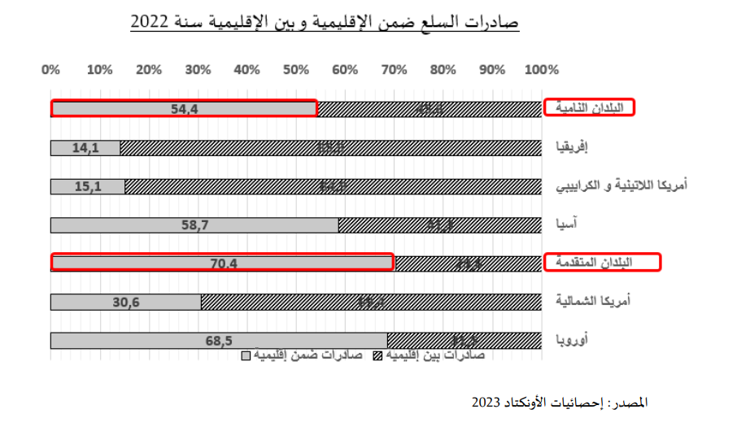
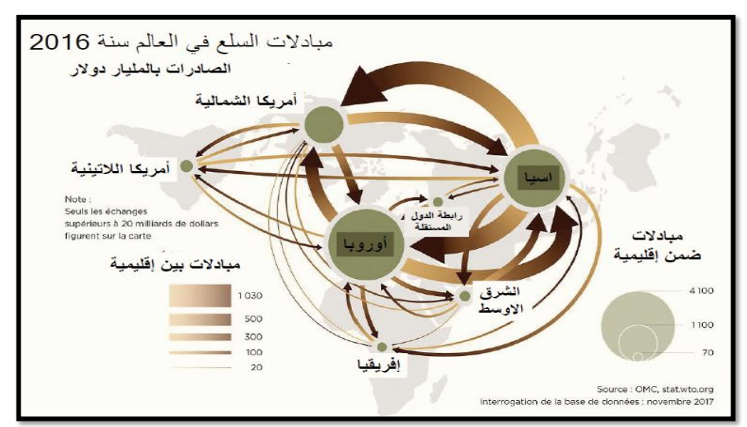

تمارين – الأدفاق التجارية العالمية: المظاهر والعوامل
- العولمة:
- عملية تزايد الترابط والاندماج بين اقتصاديات العالم وثقافاته وسكانه.
- الشركات عبر القطرية:
- شركة كبرى تمارس أنشطتها مباشرة أو عن طريق فروعها في الخارج مع الحفاظ على مقرها الاجتماعي في بلدها الأصلي.
- الصندقة:
- نظام النقل بالحاويات الموحدة الذي سهل الشحن وزاد من حمولة السفن وخفض تكاليف النقل البحري.
- التصنيع الحاث على التصدير:
- سياسة تنموية اعتمدتها بلدان الجنوب تقوم على توجيه الصناعات نحو الأسواق الخارجية لتحقيق النمو.
| السنة | 1980 | 1990 | 2000 | 2010 | 2015 | 2019 | 2020 | 2021 | 2022 | 2023 |
|---|---|---|---|---|---|---|---|---|---|---|
| أدفاق السلع | 2050 | 3495 | 6452 | 15302 | 17000 | 18500 | 16000 | 21000 | 25263 | 24010 |
| أدفاق الخدمات التجارية | 395 | 813 | 1521 | 3935 | 5000 | 6100 | 5900 | 6800 | 7542 | 7500 |
| إجمالي الأدفاق التجارية | 2445 | 4308 | 7973 | 19237 | 22000 | 24600 | 21900 | 27800 | 32805 | 31510 |
المصدر: إحصائيات المنظمة العالمية للتجارة 2024 والأونكتاد 2023



تتميز الأدفاق التجارية بهيمنة الأدفاق ضمن الإقليمية، حيث تمثل أكثر من ثلثي المبادلات الأوروبية سنة 2022. ويؤكد ذلك أن العولمة لم تصل إلى عولمة كاملة، وأن التجارة العالمية تتركز أساساً داخل الأقاليم والتكتلات الكبرى، بينما تبقى مناطق مثل أفريقيا وأمريكا اللاتينية هامشية في التجارة العالمية.
- مقدمة: تقديم الأدفاق التجارية كظاهرة عالمية متنامية.
- تطوير: أولاً. تحولات الاقتصاد العالمي وعولمة الاستثمار؛ ثانياً. تحرير التجارة العالمية؛ ثالثاً. العوامل التقنية.
- خاتمة: تفاعل العوامل يفسر النمو السريع للأدفاق التجارية.
مقدمة
تضاعفت الأدفاق التجارية العالمية قرابة 13 مرة بين 1980 و2024، ويعزى هذا النمو إلى عوامل اقتصادية وتجارية وتقنية مترابطة.
تطوير
أولاً. تحولات الاقتصاد العالمي وعولمة الاستثمار
ارتفع عدد فروع الشركات عبر القطرية التي تسعى إلى تجزئة الإنتاج وتوطين الفروع في الخارج، مما كثّف المبادلات التجارية، وساهم انفتاح بلدان أوروبا الشرقية والدول النامية في توسيع التجارة العالمية.
ثانياً. تحرير التجارة العالمية
ساهمت جولات الغات وإنشاء المنظمة العالمية للتجارة في خفض الرسوم الجمركية على المنتجات الصناعية من 40% بعد الحرب العالمية الثانية إلى 3.9% فقط، كما أبرمت اتفاقيات وأنشئت مناطق تبادل حر.
ثالثاً. العوامل التقنية المساعدة
أحدثت الحاويات ثورة في النقل البحري، وساهم تعميم الطابع البحري للتجارة وتطور تكنولوجيات المعلومات والاتصال في تسهيل الربط بين الفاعلين وتقليص تكاليف النقل.
خاتمة
هكذا تتفاعل تحولات الاقتصاد العالمي وتحرير التجارة والتطور التقني لتفسير النمو السريع للأدفاق التجارية العالمية.